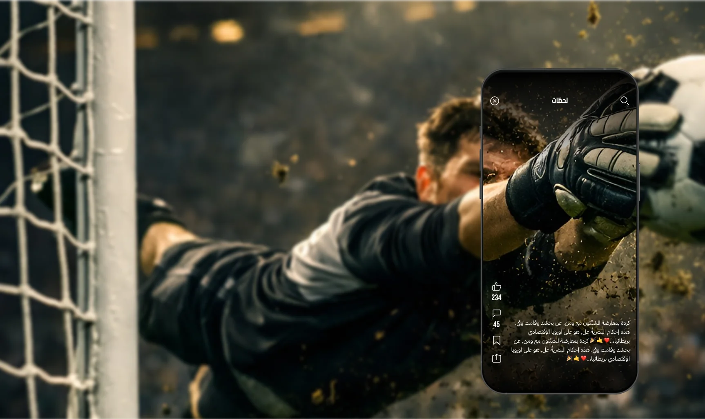
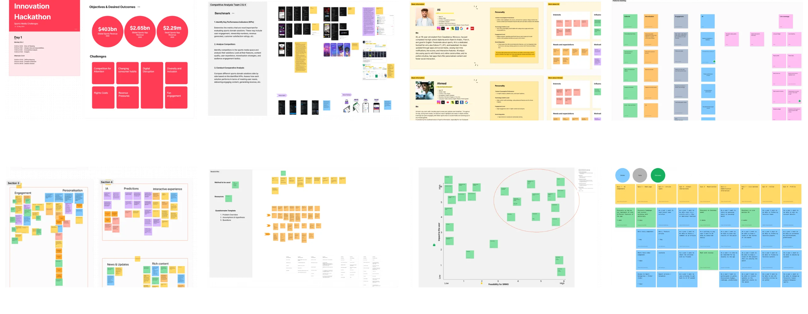
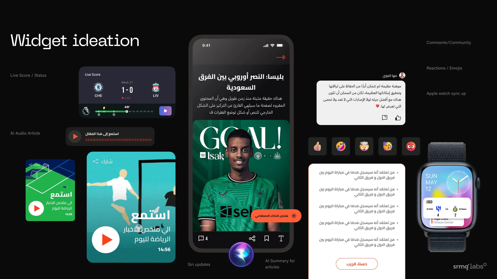
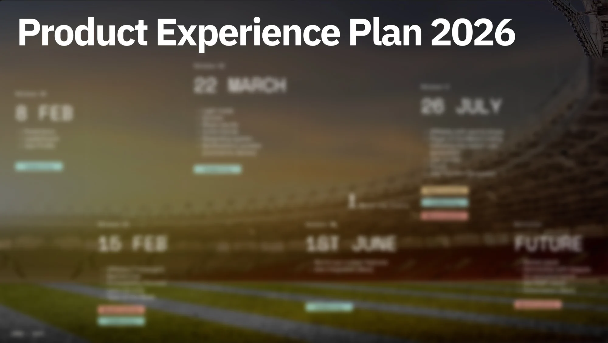

Translating SRMG's editorial credibility into digital audience engagement and monetisation
About GOAT- Activation Rate (Download to registration)
- 61%
- Downloads
- 52,000
- organic visits
- 54,109
The idea
From hackathon concept to product
curates content from SRMG’s most trusted brands, including Arriyadiah, Asharq Al Awsat, Asharq Sports, and Sport 24, giving fans access to reporting, analysis, and match coverage from the region’s most established newsrooms through one unified product experience.
The opportunity
New monetisation opportunities aligned with fan behavior and premium engagement. These include intelligent sponsorship integrations, data-driven brand partnerships, and premium experiences built around key moments and competitions.



My role
Owning the product, not just the design
I was design strategy lead and Product Owner from concept to launch.
- Product Owner: aligned stakeholders on the strategic direction, then built the feature roadmap and product backlog including community building features and games as well as monetisation contextual approaches
- Design strategy: set the experience across ~296 screens and 25 flows
- Team: I led 7 designers across UX and visual design, working alongside SRMG’s creative team from first concept to launch.
Decisions and trade-offs
GOAT has to earn revenue, but fans leave the moment ads get in the way of the match, the quiz or the prediction they came for. We chose contextual monetisation over maximum ad inventory: ads follow the rhythm of the content instead of interrupting it.
- Ads at natural breaks. Only one ad above the fold on any screen. Feeds carry an ad every 4–6 cards, games show a takeover only once the game ends and before the result, and articles follow publishing standards with one persistent bottom banner.
- Protected moments stay ad-free. No ads in onboarding, on the prediction confirmation, on error or empty states, or in profile, settings and legal screens. Low-content screens such as the club table and squad stay clean too.
- Revenue never costs performance or trust. No layout shift, no more than 200ms added to first interaction, empty slots collapse after 3 seconds, close buttons appear within a second, video stays muted, and every format works in dark mode and Arabic.
- Every placement is measurable. Impressions, viewability to IAB standard, clicks and dismissals are tracked per user, placement and session, so each slot can be valued and tuned.
Still open: how long the same ad can repeat across screens, which we’re agreeing with the SMS and tech teams.
What shipped
A fan-centric sports platform designed to foster community, drive engagement, and enable monetisation
GOAT launched with ~413 screens across 25 flows, built on its own design system.
The design system
GOAT runs on its own design system, built specifically for the app. It spans 19 sets: foundations (colours, typography, iconography, grids, effects and motion), core components (buttons, cards, navigation and inputs), brand and media (logo, photos, video and audio), and sports-specific sets for crests and competitions, match centre, players and stats, community, gamification and the World Cup.
Results
Measured after launch
- Download-to-registration rose from 50% to 61%
- Downloads grew organically from 1,110 at soft launch to 52,000
- 54,109 visits by 30 April 2026
What comes next
Expand how fans interact with content, match moments, and each other, powered by a smarter, data-led experience and building connected sports community
Next project
Data to SSO